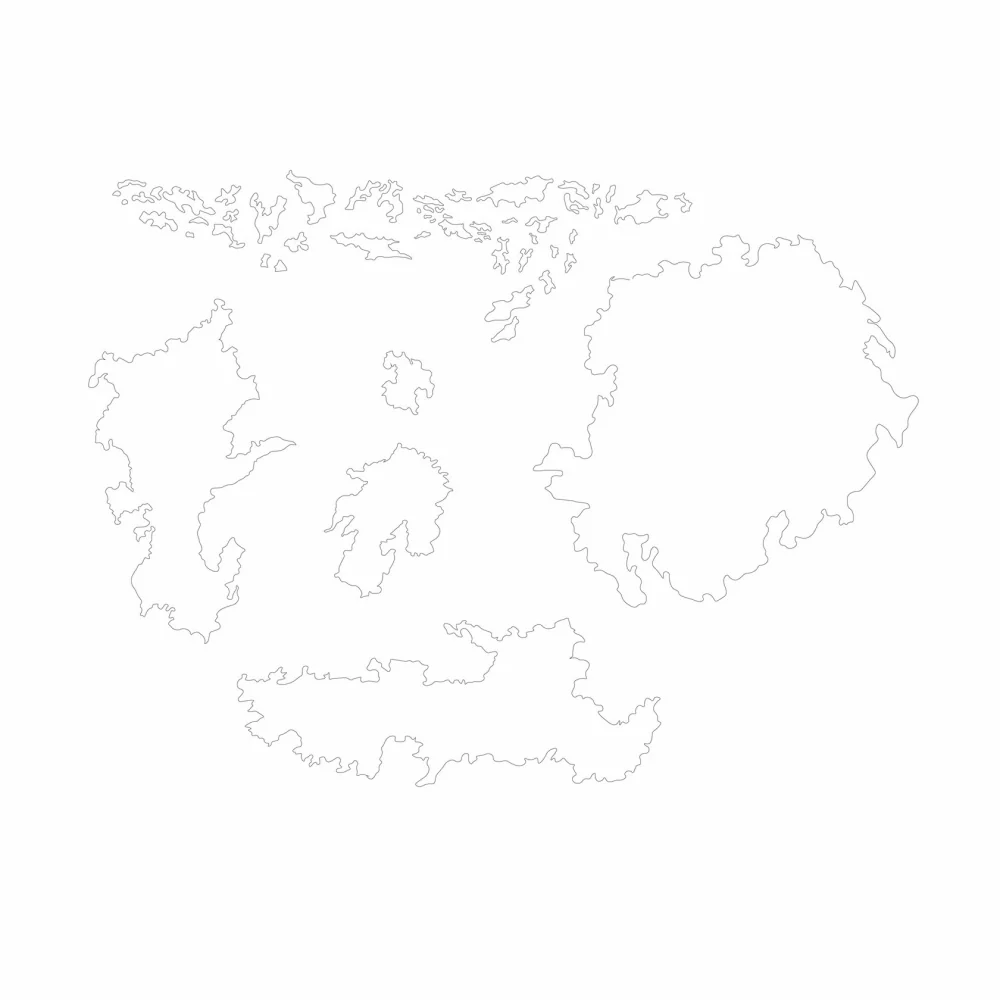
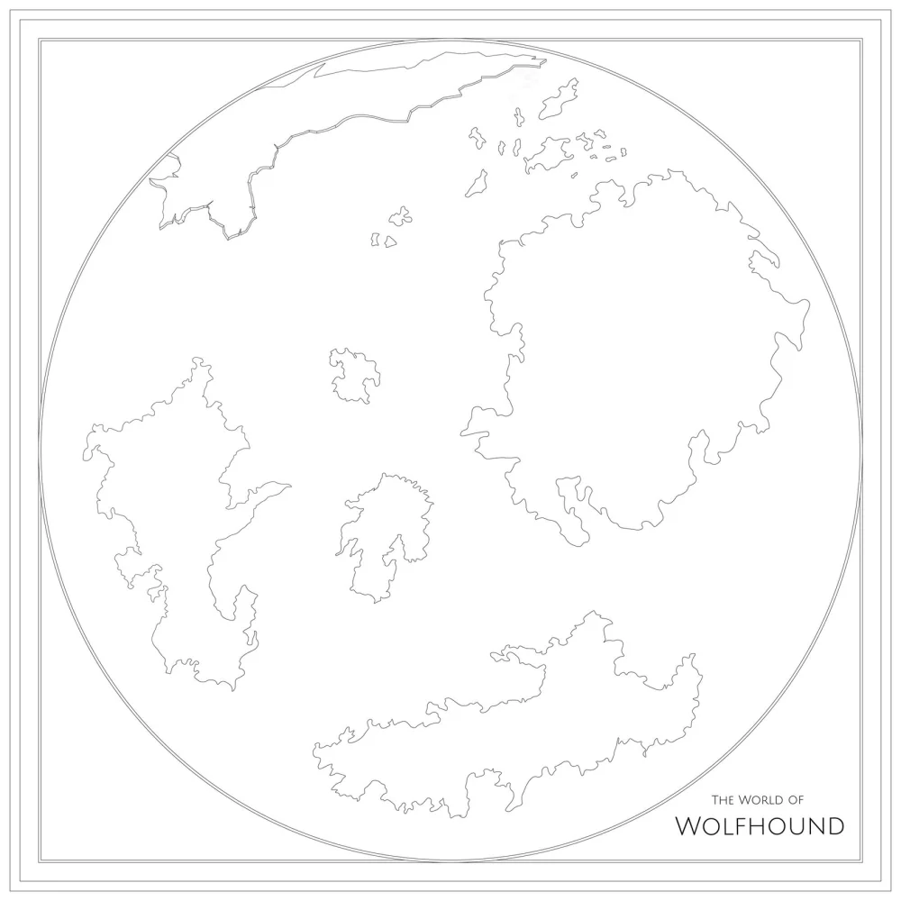
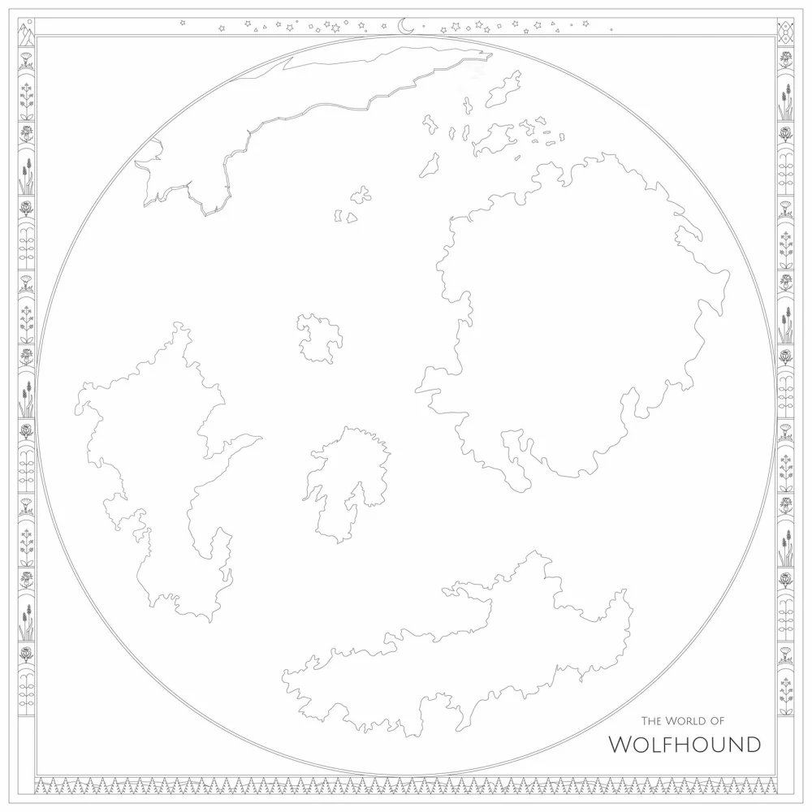
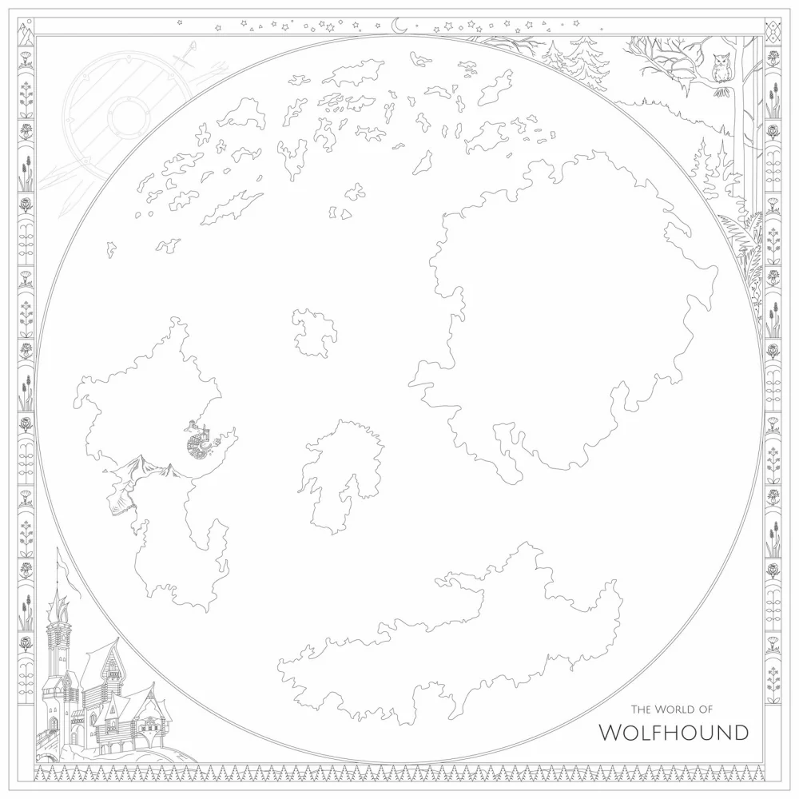
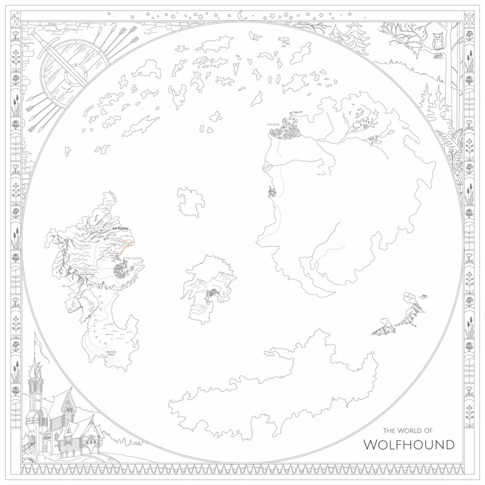
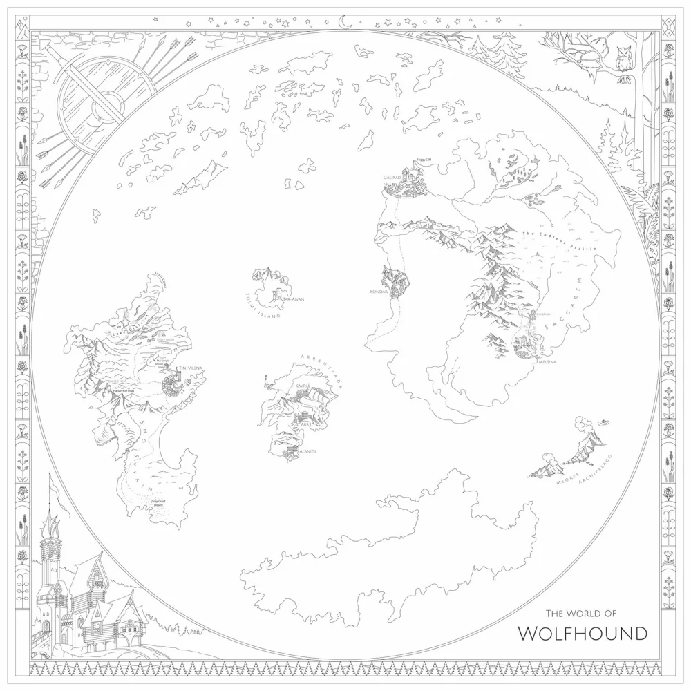
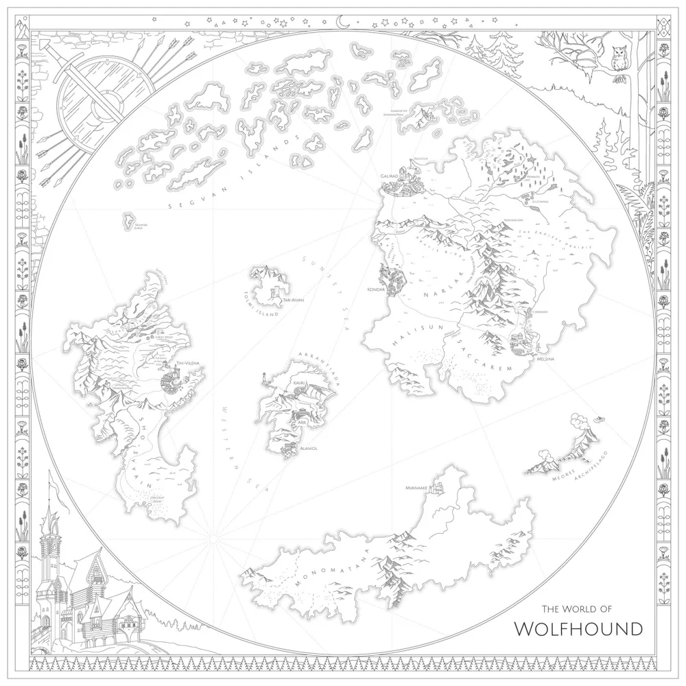
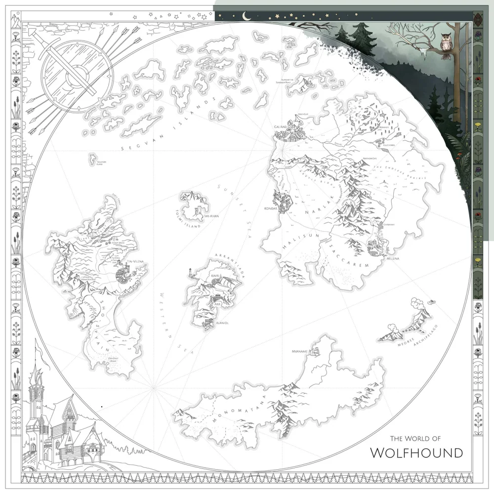
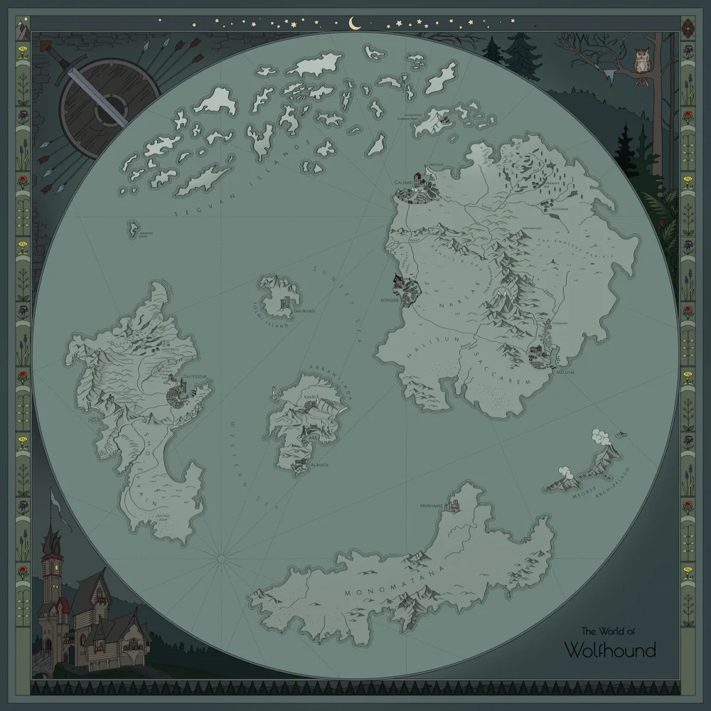

All maps are products of human imagination. Sometimes the places they depict are products of imagination, too. In the case of fantasy novels, where characters are travelling, fighting and chasing each other across continents most of the time, it is especially interesting to know the geography of the area where all these actions take place.
The project started with the idea to create a map illustrating the fantasy book series 'Volkodav' ('The Wolfhound') by M. Semenova. The plot is set in an imagined quasi-medieval world which is not totally unfamiliar: developed countries trade, enlightened citizens of a distant island study natural science while some mountainous tribes are busy fighting each other. In some places we can identify a bit of the Middle East, western port cities are just like European, volcanic archipelago has a hint of Maori culture, and there are very Slavic settlements hidden in the north woods.
Steps in
the process
Since the book series doesn't have a recognised, carved in stone map that would be printed in all editions, I didn't stick strictly to any geographical reference and took liberties with the source map: while loosely keeping the shape of the continents, I slightly shifted their mutual location.
Here are five months of casual drawings, mostly nocturnal, put together in a sequence of several snapshots.









1 / 9
In terms of visual language, the map is trying to cautiously quote the style of the celebrated fairy tale illustrations by Ivan Bilibin, who has blended elements of Art Nouveau with Northern slavic aesthetics.
Oops! This one is actually by Alexander Suchkov, a contemporary artist who imitates Bilibin’s style so elegantly that I haven’t noticed the difference (neither the signature in the corner)
But at the beginning, in sketch form it all looked extremely messy
Have a
closer look
(it looks better on the laptop)